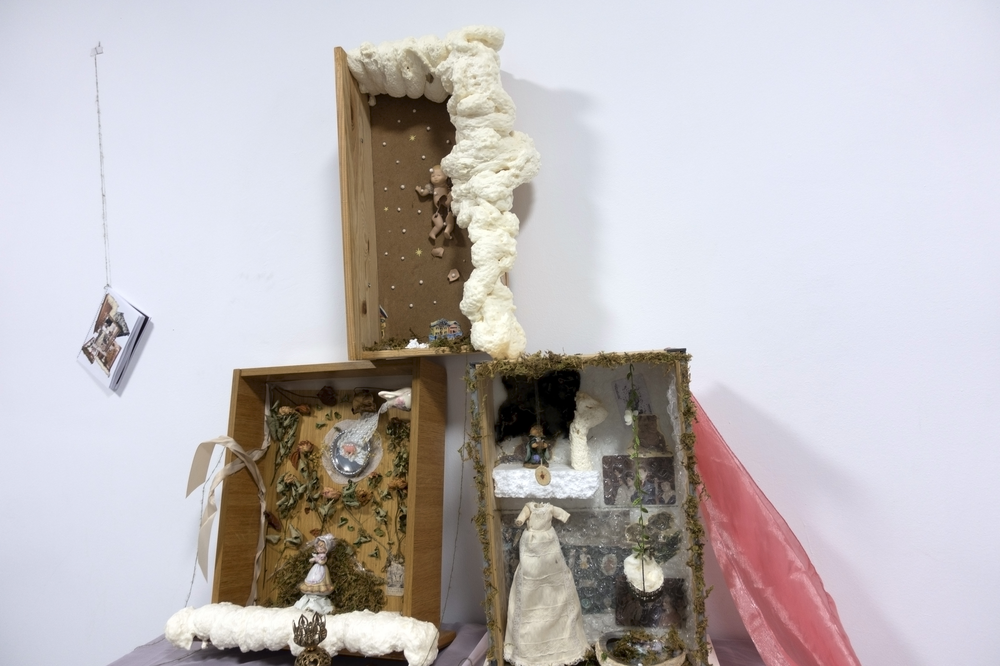
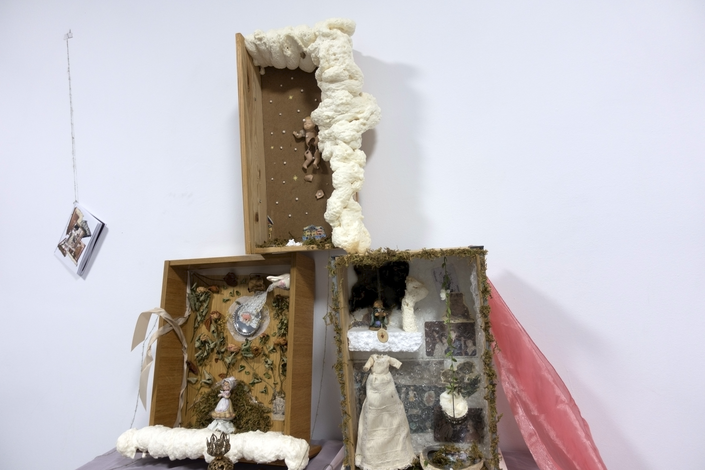


He realitzat una sèrie de cinc altars-calaixos a partir d'objectes recol·lectats i acumulats on el relat s'ha anat construïnt alhora que s'ha construït la peça. Durant tres mesos he anat construïnt aquests altars des de la intuició i el meu imaginari propi, de la mateixa manera que he anat seleccionant/descartant materials i objectes susceptibles d'aparèixer. Els relats no estàn tancats ni tenen una única lectura lineal, es pot jugar amb les significacions o sentit que pugui agafar.
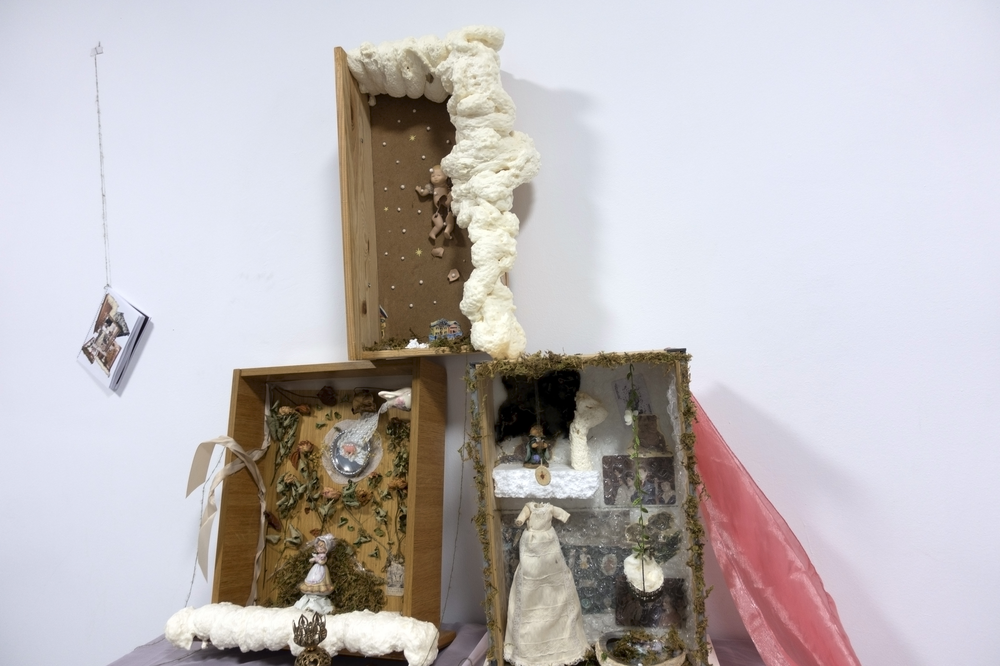
 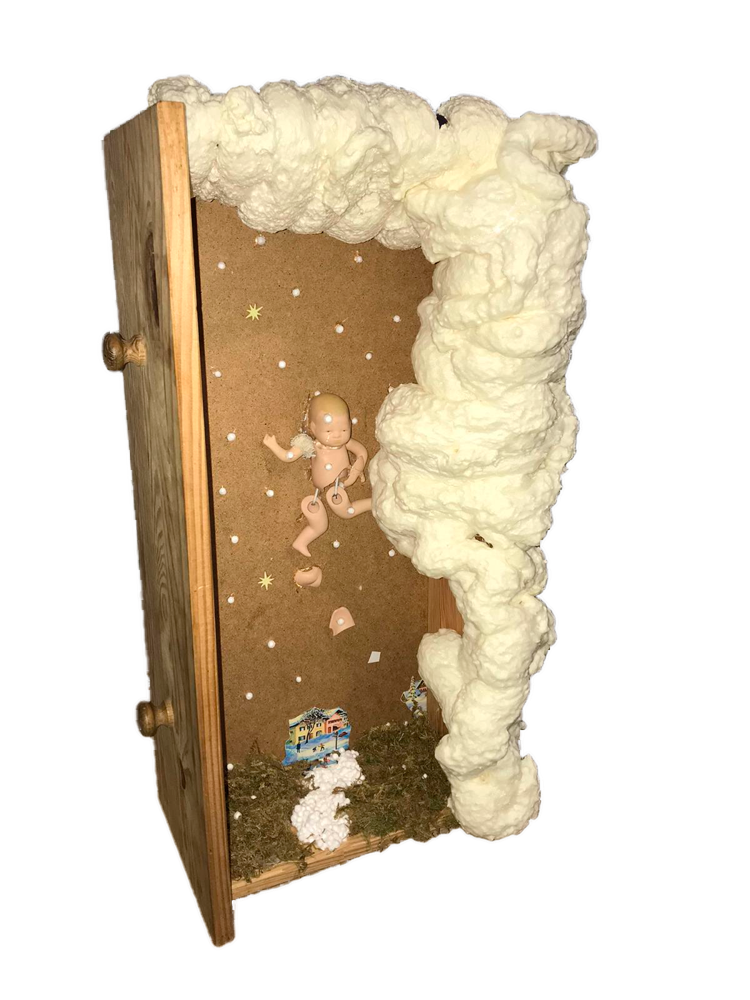
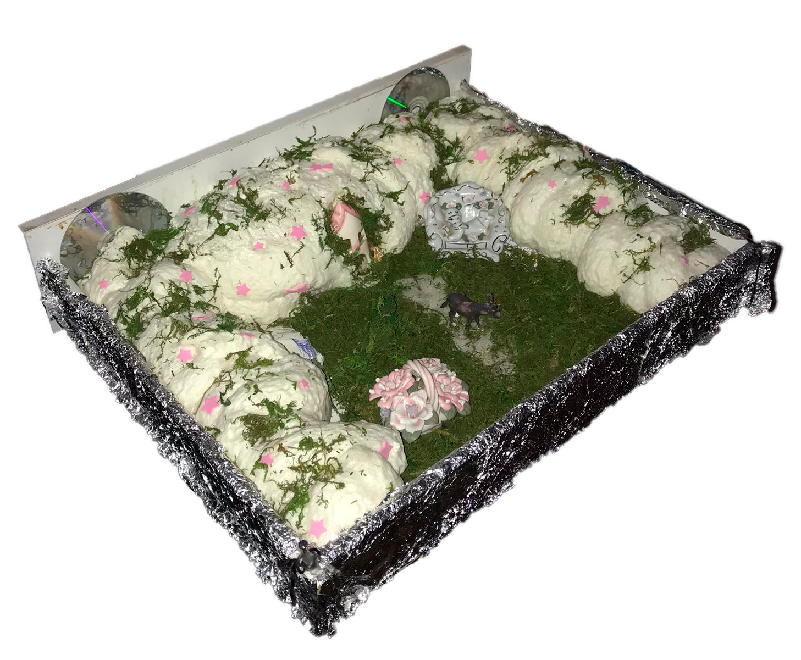
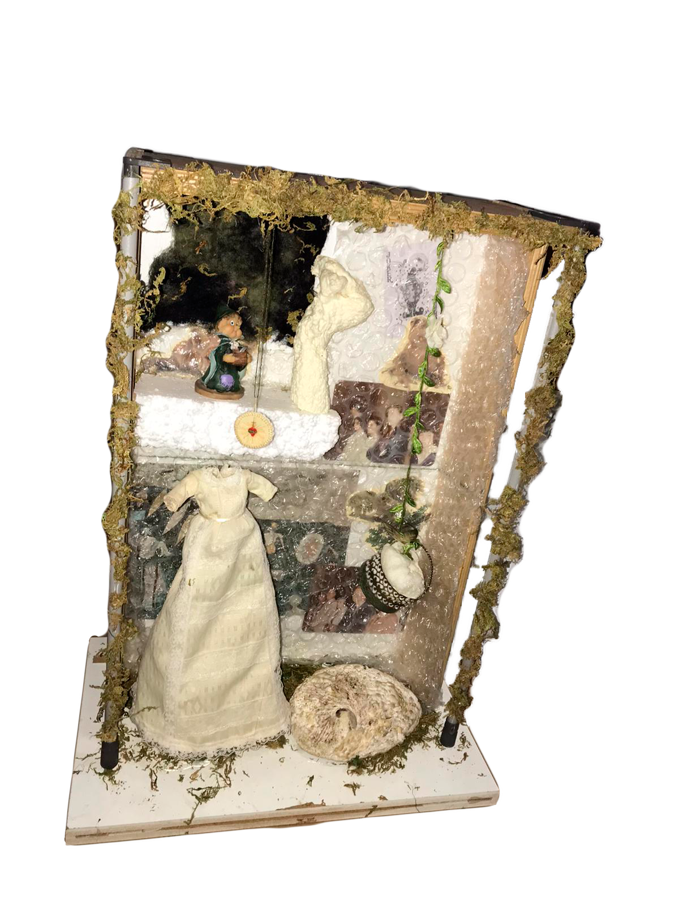
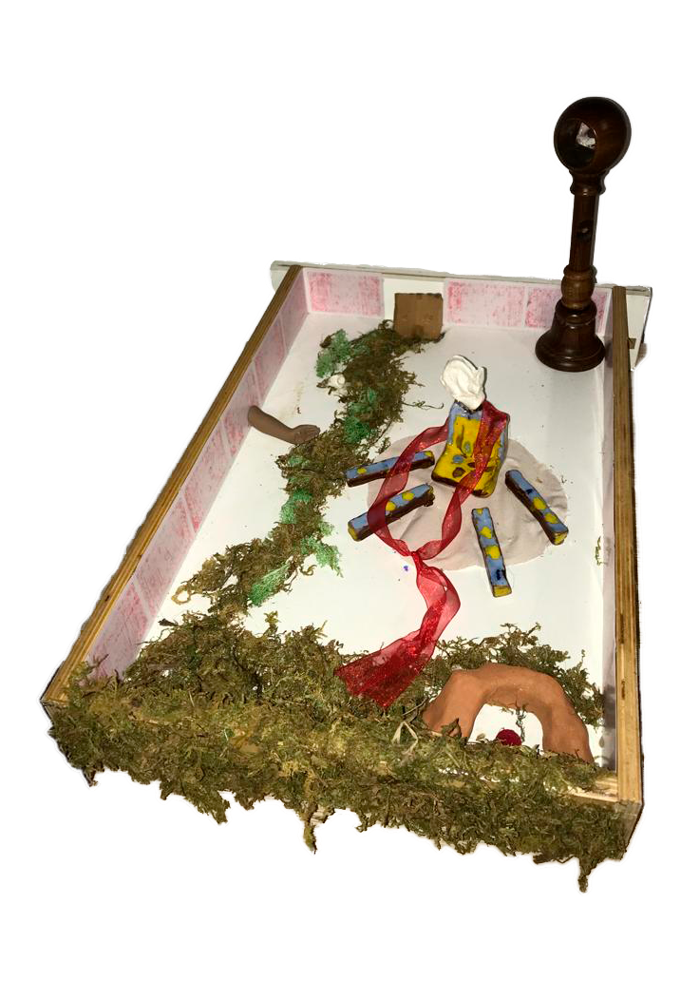
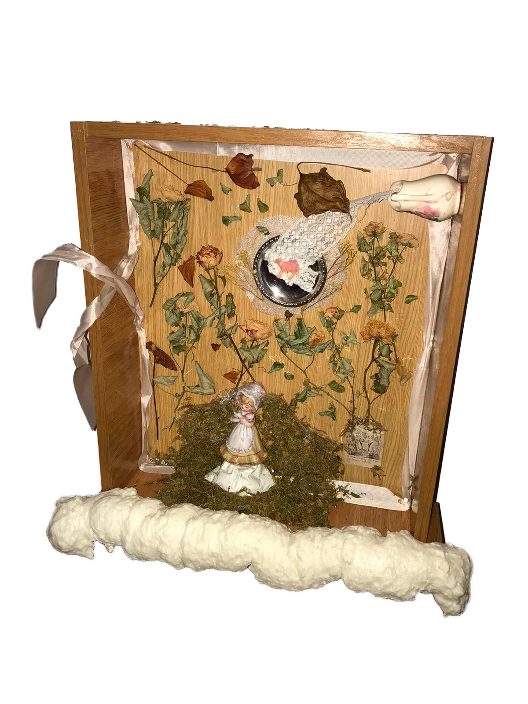
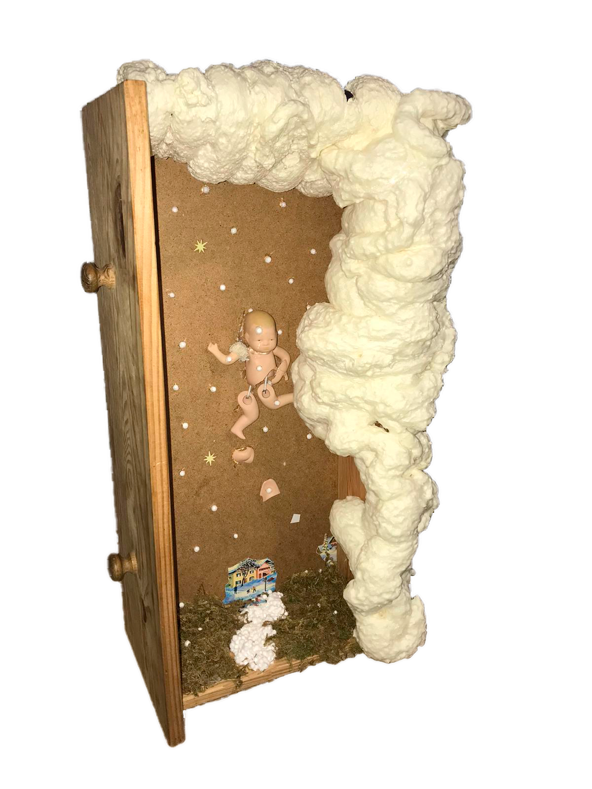
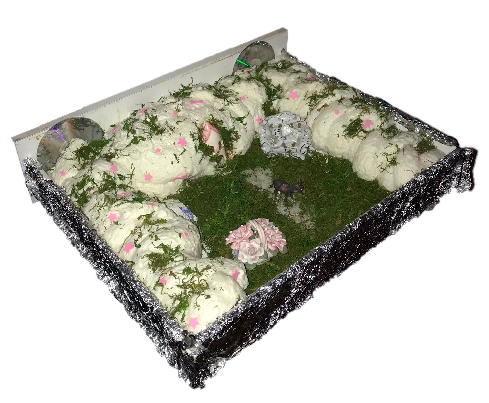
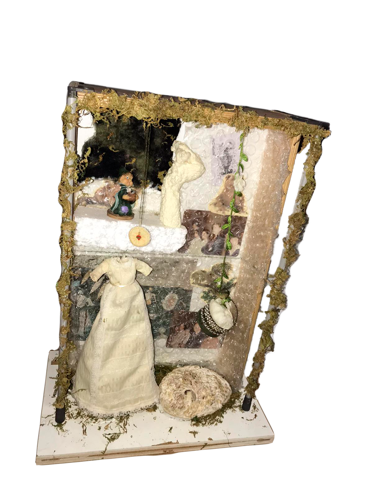
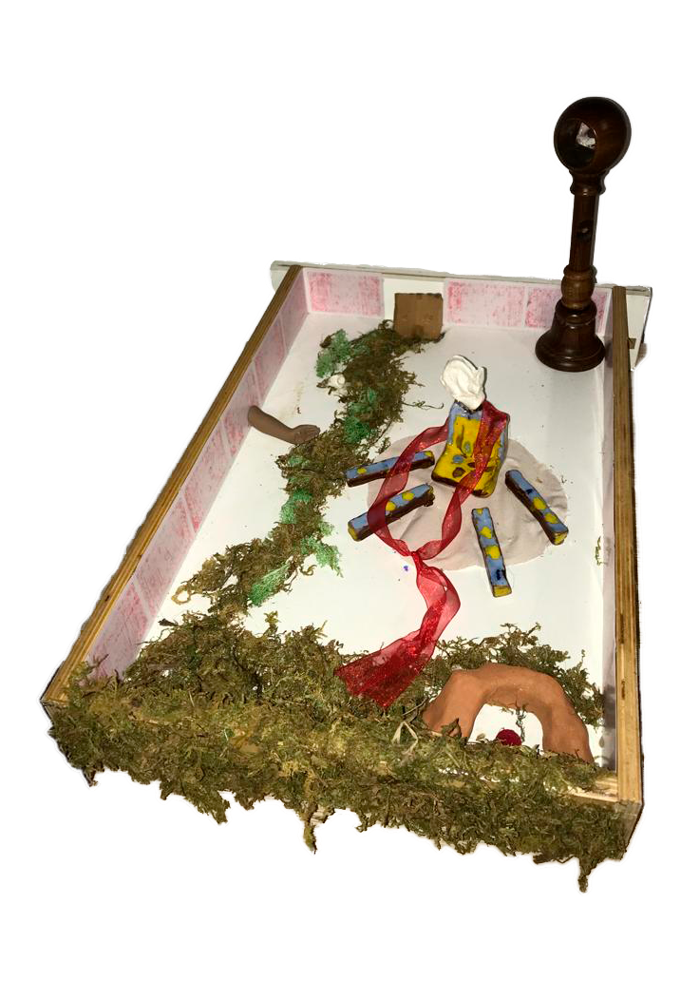
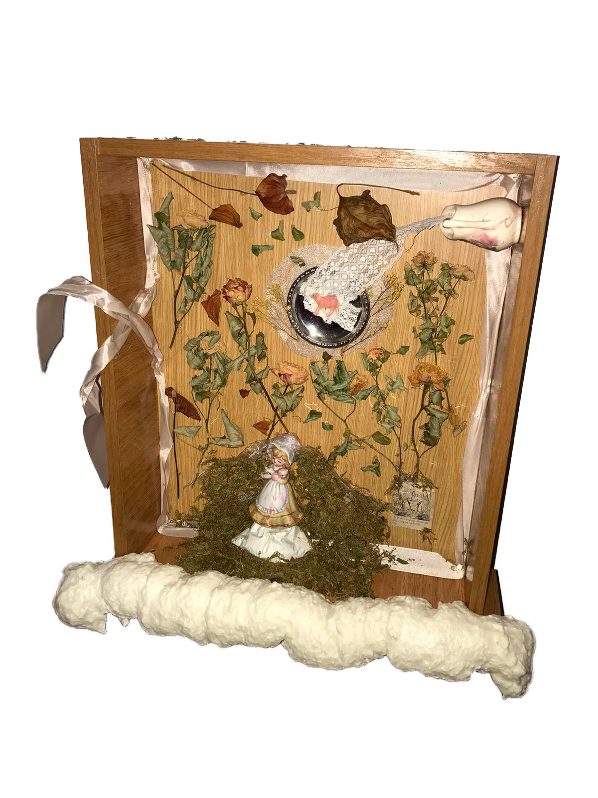